第9章
人类的特殊表情——回想、默想、恶劣情绪、愠怒、决心
·Reflection，Meditation，Ill-temper，Sulkiness，Determination·
我以为，上面所举出的一切原因，不论是综合的或者各个分离的，都以多少不同的程度在对各种情况起有作用；这绝不是不可能的。结果就应当形成一种牢固确立的、说不定现在已经成为遗传的习惯，就是：在开始和正在进行任何一种紧张的长期努力或者任何一种细致的操作时候，就把嘴紧紧闭住。根据联合原理，当我们的头脑一定要采取任何特定的动作或者任何行为的路线时候，甚至是在使用任何身体上的努力以前，或者在简直连这种努力也用不到的时候，也都会发生出一种朝向这同样的习惯的强烈倾向。因此，嘴的习惯性的紧紧闭住的动作，就应当成为表明性格上的决断的特征；而决断则又容易转变成为顽固。
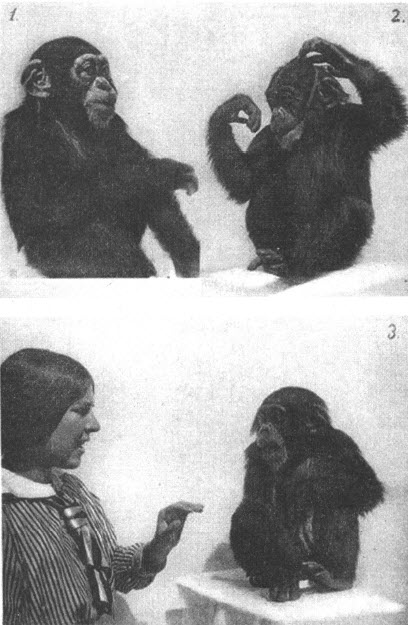
猩猩常玩的游戏：①反复嚼面包屑；②头上带上胶圈；③用牙咬住某些长条状的东西。
皱眉动作——在努力时候或者在感受到某种困难事情或不愉快事情时候所发生的回想（考虑）——出神的默想——恶劣情绪——阴郁——顽固——愠怒和撅嘴巴——决心和决断——嘴的紧闭
皱眉肌由于本身收缩而使双眉下降，挤在一起，同时在前额上产生纵直的沟纹；这种情形就是皱眉（蹙额）。贝尔爵士错误地认为皱眉肌是人类所特有的肌肉，因此就把它看做是“人的面部的最显著的肌肉。它用强大力量把双眉皱紧在一起，这就无意识地而且不可抗拒地传达出心中所抱有的思想来”。还有，在另一处地方，他写道：“在双眉被皱紧在一起的时候，精神力量就明显地出现，因此在这里，思想和情绪就会去和真正动物的野蛮的、残酷的大怒混合起来”。 (1) 在这些说法里虽然合有很多真实情形，但是很难包括全部真理。杜庆博士曾经把皱眉肌叫做回想用的肌肉（muscle of reflection）； (2) 可是，这个名称如果不加以某些限制，那就不能被认为是十分正确的。
一个人可以陷进到最深刻的思索里去；而且在他的思考路线上还没有遇到一些障碍以前，或者在某种妨害还没有打断他的思索以前，他的双眉仍旧是平滑不皱的；但是到了这个时候，就出现皱眉，好像有一个阴影笼罩在他的眉毛上面。一个饿得半死的人会紧张地想着怎样去获得食物；可是，除非是他在思索方面或者行动方面遇到某种困难，或者在取得食物时候发现它是不能进口的，他就不至于会皱起眉来。我已经注意到，差不多每个人在一辨别出他所吃的东西的滋味奇特或者恶劣的时候，就立刻皱起眉来。我曾经在没有预先说明自己的目的时候，去请求几个人专心倾听一种很平和的叩击声，他们都已经对这种声音的性质和来源知道得十分清楚，因此在听到它以后一个人没有皱眉；可是，还有一个也参加到我们这里来，却没有理解到我们大家在十分静寂里干些什么事情，因此在请他倾听的时候，他就大皱起眉毛来，不过还没有发生恶劣情绪，并且说道，他至少是不能够理解到我们大家想要他干什么事情。皮德利特博士曾经发表过他对同样情形的意见， (3) 并且补充说：口吃的人通常在讲话的时候皱眉；一个人甚至在干一件细小的事情的时候，例如在穿长筒皮靴而发现它太紧窄的时候，也要皱起眉来。有些人变成了习惯性的皱眉者，因此单单讲话用力，就差不多时常引起他们的双眉收缩起来。
一切种族的人在思想上发生任何疑难的时候，就会皱眉；这是我根据那些回答我寄给他们的询问信的人的话来断定的；可是，我的询问信写得不好，把出神的默想和困恼的回想这两种情绪混杂起来了。可是，澳大利亚人、马来人，印度人和南非洲的卡弗尔人在感到困恼的时候，确实是皱眉的。多勃利茨霍费尔（Dobritzhoffer）指出说，南美洲的瓜拉尼人（Guaranies）在同样情形下也把双眉皱紧。 (4)
根据这些考察到的情形，我们可以得出结论说，皱眉这种表情，无论怎样深刻，也绝不是简单回想的表情，或者无论怎样细致，也绝不是注意的表情，而是一种在思考路线上或者在动作上遇到某种困难或者不愉快的事情时候出现的表情。可是，深刻的回想很难长久不发生什么困难而顺利进行下去，所以通常就同时有皱眉出现。因此，据贝尔爵士所说，皱眉通常使面容显出一种具有智慧能力的外表来。可是，为了要产生出这种效果来，就必须使双眼清楚地张开和凝视不动，或者也可以像深刻的思考时候所经常发生的情形那样，双眼向下。如果同时出现另一些情形，例如有恶劣情绪或者容易生气的人、带有黯淡的眼睛和下垂的下颚而显露出长期受苦的人、辨别出自己的食物的滋味恶劣的人、或者发现自己难以做到某种琐细动作（如用线穿针）的人，所发生的皱眉情形，那么这种在回想方面所发生的面容就会因此遭到破坏。在这些情形里，虽然时常可以看到皱眉，但是同时还出现另外的表情，因此这就使容貌显现不出一种具有智慧能力或者深刻思考的外表来。
现在我们可以来考察，为什么无论在思考方面或者在动作方面所发生的某种困难或者不愉快的事情在被感受到的时候，就会由皱眉表达出来。也像自然科学家们所认为的那样，这种考察方法同样适用于探查一种器官在胚胎学上的发育情形，以便充分理解到这种器官的构造，所以在表情动作的研究方面最好也尽可能遵从这同样的计划。我们在婴孩初生几天里所看到的最早的、几乎是唯一的表情（这种表情在以后的日子里也时常出现），就是他在发生尖叫动作时候的表情；在婴孩初生时候或者稍后的时候，由于各种悲痛的或者不愉快的感觉和情绪，就是由于饥饿、苦痛、愤怒、嫉妒，恐惧等，而刺激起尖叫来。在发生这一类感觉和情绪的时候，眼睛周围的肌肉强烈收缩；我以为，这也大体上说明了我们以后的生活时期里的皱眉动作时常发生的原因。我多次观察了自己的婴孩，从他们出生大约一星期时候观察到两三个月，并且发现，在一阵尖叫逐渐到来的时候，最初的征象就是皱眉肌的收缩，这就产生出轻微的皱眉来，接着很快发生眼睛周围的其他肌肉的收缩。根据我在自己的笔记本上的记录，在婴孩不舒服或者不健康的时候，可以看到有小皱眉不断像阴影似的通过他的面部；在这些小皱眉出现以后，通常迟早发生一阵哭喊，但并不是常常这样。例如，我曾经有一段时间观察过一个出生7～8个星期间的婴孩；他在吮吸到一些变冷的牛奶时候，就会因此不愉快，而且在整个时间里总是保持着固定的小皱眉。这种情形还绝不会发展到真正哭喊发作的地步，不过偶而也可以观察到各个很接近于它的阶段。
因为婴孩在无数世代里每当哭喊或者尖叫的发作要开始到来的时候，就已经有了皱眉的习惯，所以这种习惯已经开始和某种悲痛或者不愉快的事情的最初感觉牢固地联合起来。因此，在类似的情况下，皱眉的习惯在成年期间里仍旧时常会重现出来，不过绝不会再发展到哭喊发作的地步。尖叫或者哭泣在我们的生活初期就已经被有意识地抑制，而皱眉则在任何的年龄里都很难被抑制住。有一件大概也值得使人注意的事情，就是：对于很会哭泣的小孩，任何一件使他们心中烦恼的事情，或者任何一件只是会引起其他大多数小孩皱一下眉的事情，都容易使他们哭泣起来。同样地，对于有几类精神病患者，任何一种精神上的努力，不管怎样的轻微，甚至使一个习惯性皱眉的人也只不过略微皱一下眉，都会引起他们发生抑制不住的哭泣。眉毛在最初感受到某种悲痛事情而收缩的习惯，虽然在婴孩时期已经被获得，但是也一定会在我们的其余生活期间里保存下去；而很多其他在幼年时代获得的联合性习惯，也一定会被人类和比较低等的动物永远保存下去；所以前面这种情形并不比后面的情形更加使人惊奇。例如，成年的猫在感到温暖和舒适的时候，就会时常再现出那种轮流伸出自己的张开足趾的前腿的习惯来；它们在吮吸母猫的乳时候为了一定的目的而采取过这种习惯。
每次在心中专门想着任何一个问题而对它的解决方面发生某种困难的时候，大概会有另一种特殊的原因来加强皱眉的习惯。视觉是一切感觉当中最重要的一种；在人类的原始时代里，大家一定为了要猎取到猎物和逃避危险，而对着远处的物体作最专心的注意。我还记得，以前我在南美洲的那些有印第安人出来袭击的地区里旅行的时候，看到半野性的高乔人（Gaucho）多么经常不断地、而且看上去好像是无意识地精密侦察全部地平线处的动静的情形，就不觉大吃一惊。原来，如果任何一个人在自己头上没有加上覆盖物（以前的人类一定本来是在头上没有覆盖物的），并且在晴朗的白天里，尤其是在天空明亮的时候，用尽全力辨认远处的物体，那么他差不多就要经常不变地把双眉收缩起来，防止太多的光线射进眼睛里去；同时，下眼睑、双颊和上唇也被向上提升，而使眼睛的孔口缩小起来。我曾经为了这个目的，请几个青年人和老年人在上面所说的情况下去瞧望远处的物体，同时使他们相信，我只不过是想要试试他们的眼睛的视力；他们在瞧望的时候，全体都表现出刚才所说的动作来。除此以外，在他们当中，有几个人还把张开而摊平的手遮在眼睛上面，挡去过多的阳光。 (5) 格拉希奥莱 (6) 在对近于相同的效果方面提出了一些意见以后，就说道：“Ce sont là des attitudes de vision difficile” (7) 。他得出结论说，眼睛周围的肌肉收缩的目的，一部分是为了要除去过多的光线（我以为这是最重要的目的），另一部分则是为了要防止一切不是直接从所要观看的物体身上发出的光线对眼睛的视网膜发生强烈影响。我曾经把这个问题去请教巴乌孟（Bowman）先生；他以为，眼睛周围的肌肉收缩，除了这两个目的以外，还可以补充一点，就是：“一部分是为了使一对眼球在靠了自己肌肉的帮助而达到构成双目视野的部位时候，得到更加牢固的支持，所以去维持两眼的交感动作”。
因为在明亮的光线下仔细瞧望远处物体所需的努力，不仅困难，而且使人厌倦，还因为这种努力在无数世代里已经习惯地和双眉的收缩动作同时发生，所以这种皱眉的习惯就会变得更加强固，不过它起初是在婴孩时代由于完全不同的原因而发生出来；这个原因就是初步在尖叫时候要去保护自己的眼睛。实际上，根据精神状态方面说来，在细心瞧看远处物体和探查不明白的思考路线之间，或者在这种瞧看和实行某种细小的麻烦的机械工作之间，都存在着很大的类似地方。双眉收缩的习惯，在一些也用不到去挡去太多光线的时候，也会继续存在——这个说法，就可以从以前所讲到的情形方面获得证实，就是：这时候眉毛和眼睑在一定的状况下，即使没有任何用处也会发生动作，正是因为它们以前在类似的状况下由于有用的目的而曾经被相似地使用过。例如，我们在不想去看任何东西的时候，就可以随意闭紧自己的双眼；我们在反对一个建议的时候，也很容易闭起眼睛来，好像不能去或者不要去看到它似的；还有在我们想到某种可怕的情形时候，也会发生闭眼的情形。我们在想要迅速看见自己周围的一切物体的时候，就会扬起眉毛来；还有在焦急地要回忆某种事情的时候，我们也时常做出同样的动作来；在做这种动作的时候，真好像我们要竭力去看到这种事情似的。
出神、默想——如果一个人陷进到深思里去而心里忘记了周围的事物，或者正像有时大家所说，“他的精神恍惚”，那么他并不会皱眉，不过他的双眼显得呆木无光。这时候，通常下眼睑向上提起，并且皱缩，正好像一个近视的人尝试去辨认远处物体的情形一样；同时，上眼轮匝肌略微收缩起来。在几种野蛮人方面，也已经观察到下眼睑在这些状现下起皱的情形；例如，但松·拉西（Dyson Lacy）先生在昆士兰省的澳大利亚人方面看到这种情形；吉契先生几次在马来半岛内地的马来人方面也看到这种情形。现在还不能够说明这种动作的意义或者原因是什么；可是，我们也可以把它作为例子，来说明眼睛周围的动作对于精神状态的关系。
眼睛呆木无光的表情是很特殊的；一个人在完全陷进到深思里去的时候，就立刻显现出这种表情来。唐得尔斯抱着通常的亲切态度，来替我研究了这个问题。他观察了很多人在这种状况下的表情，而且还请恩格耳曼（Engelmann）教授来对他自己的表情作观察。原来在这种情况下，双眼并不固定在任何物体上，因此正像我所想象到的，它们也不固定在远处的物体上。它们的视线甚至时常略微分散开来；如果头部保持竖直状态，那么这种分散和水平视野面所成的角度，最大达到2°。这是用观察远处物体的交叉双重像的方法来确定的。时常可以观察到，深陷在思想里的人的头部由于肌肉普遍松弛而向前低垂；如果在这种情形下，视野平面仍旧是水平的，那么双眼就必须略微向上翻转，因此这时候视线的分散角度达到3°或3°5′。如果眼睛再向上翻转，那么分散角度就会达到6°和7°。唐得尔斯教授认为这种分散情形是由于眼睛的某些肌肉几乎完全松弛而发生的；这种松弛情形则时常是由于精神全部集中的结果而发生的 (8) 。双眼肌肉的活动状态，也就是收敛的活动状态。唐得尔斯教授关于双眼在完全出神期间里的视线分散方面指出说，如果一只眼睛变成瞎眼，那么它差不多时常在过了很短时间以后要向外偏移，因为它的肌肉不再为了取得双眼视看而被用来把眼球向内移动了。
困恼的回想时常连同一定的动作或者姿态而出现。在这些状况里，我们通常就把手举起，靠在前额、嘴或者下颚上；可是，按照我所能看到的情形，当我们完全沉浸在默想里去，而且还没有遭遇到什么困难的时候，我们反而不会做出这样的动作来了。普罗塔斯（Plautus）在自己的一个剧本里， (9) 描写到一个困惑的人时候说道：“瞧吧，他把下巴搁在自己的手上了”。甚至是像举手到脸上这种微小而且显然没有意义的姿态，也在几种野蛮人方面被观察到过。孟谢尔·威尔先生曾经在南非洲的卡弗尔人那里观察到这种姿态；而且土人的酋长盖卡还补充说，在这些情况下，男人们还“有时要扯拉自己的胡须”。华盛顿·马太先生曾经注意到美国西部地区的几个最野蛮的印第安人部落，并且指出说，他曾经看到，这些印第安人在集中自己的思想时候，就举起自己的“手，通常是用大拇指和食指，去按住面部的某一部分，普通是按住上唇”。我们可以理解到，为什么在深思使脑筋极其疲累的时候，要去揿压或者擦拭前额；可是，为什么要把手举起到嘴边或者面部——这个问题也绝不是使人明白的。
恶劣情绪——我们已经知道，皱眉是我们在思索或者行动方面遭遇到某种困难或者经受到某种不愉快的事情而发生的自然的表情；如果一个人的精神时常和容易受到这方面的影响，那么他就倾向于恶劣情绪，或者轻微的愤怒，或者急躁；通常也用皱眉来表明这种情绪。可是，有一种由于皱眉而发生的生气表情，可以被其他的动作来消除去；这些动作就是：嘴由于习惯而被牵引成为微笑状态，因此显得带有恋情的样子；双眼变得明亮而且愉快活泼。如果双眼明显而且坚定不动，那么也会发生这种情形，并且具有认真回想的外貌。如果在皱眉时候还出现嘴角有些下降这种悲哀的表征，那么这就使面部具有一种急躁的样子。如果婴孩在哭喊时候很会皱眉（参看照相图版IV，图2）， (10) 但是并没有像通常情形那样把眼轮匝肌强烈收缩，那么面部就会显现出一种很明显的愤怒或者大怒而且连同悲惨在一起的表情来。
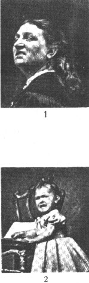
照相图版 IV
如果全部皱缩的眉毛由于鼻三棱肌的收缩而被向下牵拉得太厉害，而鼻子基部出现横皱纹或者褶襞，那么面部就显出阴郁的表情来。杜庆以为，这种肌肉的收缩，如果没有任何皱眉现象发生，也会使面部显出极端的敌意的严厉来。 (11) 可是，我对于这是不是真正的或者自然的表情大有怀疑。我曾经把杜庆的一张摄有青年人因鼻三棱肌受到电流刺激而强烈收缩的照片，交给11个人（当中有几个美术家）去看，但是在他们当中除了一个女郎能够正确回答“不高兴的沉默”以外，其余的人都不能够猜测到这张照片所表明的是什么意义。在我初次看到这张照片，而且知道它所表明的意义的时候，我就以为，在我所想象的表情里，要添上一件必需的东西，就是皱缩的眉毛；这样才使我认为这种表情是真正的和极其阴郁的。
紧闭的嘴，再加上低垂而皱缩的眉毛，就使面部显出决心的表情来，或者显出顽固和执拗的表情来。后面我们就要来讨论到，嘴的紧闭怎样会使面部显出决心的样子来这个问题。我的通信者们，曾经在澳大利亚的6个不同地区的土人方面，清楚地辨认出他们的执拗的顽固表情来。根据斯各特先生的讲述，印第安人的这种表情很显著。在马来人、中国人、卡弗尔人、埃塞俄比亚人方面，也已经观察到同样的表情；根据罗特罗克博士的讲述，北美洲的未开化的印第安人显著地具有这种表情；还有，根据福尔勃斯先生的讲述，南美洲的玻利维亚的爱马拉人（Aymaras）也是这样。我曾经从智利南部的阿拉乌康人（Araucanos）方面观察到这种表情。但松·拉西先生指出说，澳大利亚的土人在发生这种心绪时候，有时就把双臂交叉放在自己的胸口；在我们欧洲人方面，也可以看到这一种姿态。坚强的决心在达到顽固的时候，也时常用双肩耸起的姿态来表示；在后面的一章里，将另再说明这种姿态的意义。
年幼的儿童用撅嘴巴来表示愠怒；这种动作有时也被叫做“尖起嘴来”（making a snout）。 (12) 在嘴角被下压得很厉害时候，下唇就略微翻出和突出；这种动作也被叫做撅嘴巴。可是，我们在这里所说的撅嘴巴，就是使双唇像管子形状一样尖起；如果鼻子较短，那么双唇一直可以突出到鼻端的部位。通常皱眉也随着撅嘴巴一起产生；有时还同时发出“布”（boo）和“唬”（whoo）的声音来。这种表情是引人注意的；而且根据我所知道的说来，它差不多是唯一在儿童时代表现得比在成年时代更加明显得多的表情。可是，一切人种的成年人在大怒的影响下都有几分突出双唇的倾向。有些小孩在害羞的时候，也撅起嘴巴来；在这时候，就很难再把它叫做愠怒了。
我曾经对几个大家庭进行了调查工作；根据这些调查可以知道，好像在欧洲的儿童当中，撅嘴巴的情形并不十分普遍；可是，这种表情流行在世界各地，而且也一定是在最不开化的种族里是普遍而非常显著的，因为它曾经引起很多观察者的注意力，在澳大利亚的8个不同地区里，曾经观察了这种表情；有一个通信者告诉我说，那里的小孩的双唇在这种情形下突出得很厉害。有两个观察者曾经看到印度小孩撅嘴巴；有三个观察者看到南美洲的卡弗尔人和芬哥人的小孩撅嘴巴；还有两个观察者看到北美洲的印第安人的小孩撅嘴巴。在中国人、埃塞俄比亚、马来半岛上的马来人、婆罗洲上的达雅克人方面也观察到这种表情；而在新西兰人方面，也时常可以观察到它。孟谢尔·威尔先生告诉我说，他曾经看到在卡弗尔人当中，不仅是小孩在愠怒时候把双唇突出得很厉害，而且成年的男女也是这样；斯塔克先生有几次观察到新西兰的男人也把双唇突出，而在当地妇女方面则时常可以看到这种表情。有时甚至从欧洲的成年人方面观察到这种表情的痕迹来。
因此，我们可以知道，双唇突出，特别是在年幼的小孩方面，是世界的大部分地方的人的愠怒的特有表情。显然，这种动作是由于原始习惯被保存下来而发生的（主要是在幼年期里），或者是由于这种习惯偶然重现而发生的。在前面的一章里曾经叙述到，幼年的猩猩和黑猩猩在不满意的时候，有些发怒或者愠怒的时候，就特别厉害地突出双唇来；它们在惊奇、有些受惊、甚至略微愉快的时候，也会做出这种表情来。它们的嘴所以要突出的原因，显然就在于要发出各种不同的相当于这种精神状态的声音来；同时根据我从黑猩猩方面所观察到的说来，它们在发出愉快的叫声时候的嘴的形状，是和在发出愤怒的叫声时候的嘴的形状略微不同的。当这些动物一开始发怒的时候，嘴的形状就马上完全发生变化，并且牙齿向外露出。据说，成年的猩猩在受伤的时候，发出“一种奇特的叫声来；起初这种声音是高音，后来就拖长而转成低沉的咆哮声。它在发出高音的时候，把双唇突出成漏斗形状，但是在发出低音的时候，则把嘴大张开来”。 (13) 至于在大猩猩方面，据说，它的下唇能够伸得很长。因此，如果我们的半人半兽的祖先在愠怒或者略微发怒时候，也像现存的类人猿那样会把双唇向外突出，那么我们的小孩在受到同样的影响时候，会显现出同样的表情的痕迹，还同时有发出声音的同样倾向来——这种事实虽然是有趣的，但也绝不是不合常理的。原来，这种情形在动物方面也绝不是不寻常的，就是：有一些特征，在动物很幼小的时期里，多少被完全保存着，而后来则丧失去了；这些特征原先是它们的祖先在成年时期所具有的，而且现在还被不同的种、它们的近亲所保存着。
还有一个也绝不是不合常理的事实，就是：野蛮人的小孩在愠怒时候，一定要比文明的欧洲人的小孩，表现出更加强烈的突出双唇的倾向来，因为野蛮状况的本质显然就在于原始状况的继续保存；这种说法甚至有时对身体的特征方面也很适用。 (14) 可能有人来反驳这种关于撅嘴巴的起源的见解说，类人猿在吃惊的时候，甚至在略微愉快的时候，也把双唇向外突出，而在人类方面，则一般只有在发生愠怒的心绪时候，方才出现这种表情。可是，在后面的一章里，我们将会看到，从各种不同的种族的人方面看来，有时惊奇也会引起双唇略微突出，不过大惊奇或者吃惊则普通用大张开嘴的动作来表示。因为我们在微笑或者声笑的时候，要把嘴向后牵伸，所以如果我们的很早的祖先确实是用双唇突出来表示愉快的话，那么现在我们在愉快的时候，已经丧失了采取这种表情的任何倾向了。
在这里也可以来注意一下儿童在愠怒时候所做出的一种小姿态，就是他们的“耸一个冷肩”（showing a cold shoulder）。我以为，这种动作是和同时耸起双肩的动作的意义不相同的。有一个生气的小孩，坐在父亲（或者母亲）的膝上，先把靠父亲的一个肩膀耸起，于是又突然把它向下急牵，好像受到抚爱的样子，后来又用它向后一推，好像要推开触犯他的人似的。我曾经看到一个小孩，站立在离开任何人稍远的地点，就清楚地用耸起一个肩膀来表示这种感情，同时使肩膀略微向后移动，于是再把整个身体转过去。
决断或者决心——嘴牢牢闭紧的动作，使面部显出一种决心或者决断的表情的倾向。大概有决心的人从来没有把嘴张大的习惯。因此，如果一个人的下颚又小又弱，好像在表明出他的嘴并不经常紧闭，那么这种情形也就通常会使人认为是性格软弱的特征。无论在身体或者精神方面，任何一种长期的努力都需要有事前的决心；如果可以证明说，在肌肉系统作着很大的连续的努力以前或者正在作着这种努力的期间里，嘴通常是牢牢地闭紧的，那么依照联合性习惯的原理，每当采取任何一种坚强的决定的时候，嘴差不多一定要随着闭紧。有几个观察者就曾经注意到，一个人在开始作出任何一种激烈的肌肉上的努力时候，总是先吸进空气使肺部扩大起来，于是靠了胸部肌肉的强烈收缩而压缩它；这就必须把嘴紧闭，才能达到这个效果。不但这样，当这个人不得不吸气的时候，他仍旧会马上把自己的胸部尽量扩大起来。
为了说明这一类动作，曾经提出了各种各样的原因来。贝尔爵士肯定说， (15) 胸部被空气所扩大，并且在这些情形下，为了要那些附着在胸部的肌肉获得坚强的支持，所以仍旧保持着扩大状态。因此，据贝尔所说，在两个人要作决死的格斗时候，就有一种可怕的沉默笼罩着他们。而只有沉重的压抑的呼吸才在破坏着这种沉默。这种沉默的出现原因，就在于：在发出任何声音的时候，就要排出空气，因而会减弱双臂的肌肉的支持力。如果这种格斗在黑暗里进行，而我们听闻到一声叫喊，那么马上就可以知道，当中有一个人因为失望而投降了。
格拉希奥莱认为， (16) 如果一个人不得不用尽全力去和另一个人进行格斗，或者不得不支持起很重的物体，或者必须长期保持同样紧张用力的姿态，那么他就必须先作出一次深长的吸气，然后再停止呼吸；可是，格拉希奥莱以为，贝尔爵士的说明是错误的。他肯定说，呼吸停止，会使血液循环受到阻碍；我以为，这种说法是确实无疑的；格拉希奥莱还举出几个从比较低等的动物的身体构造方面得来的有趣证据，来表明出：一方面，一种受到阻碍的血液循环对于延长的肌肉努力方面是必需的；另一方面，一种加速的血液循环则对于迅速的动作方面是必需的。根据这个见解，我们在开始作任何一种很大的努力时候，就要把嘴闭住和停止呼吸，以便阻止血液循环。格拉希奥莱在总结自己关于这个问题的意见时候说道：“C'est là la vraie théorie de l'effort continu” (17) ；可是，我不知道其他的生理学家对这个理论赞成到什么程度。
皮德利特博士根据下面的理论来说明嘴在紧张的肌肉努力时候的紧闭情形， (18) 就是：在作任何一种特殊的努力时候，除了那些必须采取行动的肌肉以外，其他的肌肉也会受到意志的影响；因此，呼吸方面的和嘴部的肌肉，由于习惯上经常被使用，自然也就应当特别容易受到这种影响。我以为，他的这个见解大概也有几分真实，因为我们在作极紧张的努力时候，时常会咬紧牙关；这时候虽然用不到去阻止呼气，但是胸部的肌肉则被强烈收缩起来。
最后，如果一个人不得不完成某种精细的困难的操作，而且不需要作任何的紧张用力，那么他通常仍旧要把嘴闭紧，并且暂时停止一下呼吸；可是，他所以要采取这样的动作，就为了要使胸部的动作不至于来打扰双臂的行动。例如，可以看到，一个人在用钱穿针的时候，就把双唇紧闭，而且有时停止呼吸，或者尽可能平静地呼吸。前面曾经讲到，当幼年的生病的黑猩猩在用手指关节捺死苍蝇的方法来自得其乐的时候，因为苍蝇在窗玻璃上面嗡嗡地飞着，所以它也屏息着呼吸去干这件事情。任何一种动作，即使它是细小的动作，如果是困难的话，那么也就需要作几分事先的决心。
我以为，上面所举出的一切原因，不论是综合的或者各个分离的，都以多少不同的程度在对各种情况起有作用；这绝不是不可能的。结果就应当形成一种牢固确立的、说不定现在已经成为遗传的习惯，就是：在开始和正在进行任何一种紧张的长期努力或者任何一种细致的操作时候，就把嘴紧紧闭住。根据联合原理，当我们的头脑一定要采取任何特定的动作或者任何行为的路线时候，甚至是在使用任何身体上的努力以前，或者在简直连这种努力也用不到的时候，也都会发生出一种朝向这同样的习惯的强烈倾向。因此，嘴的习惯性的紧紧闭住的动作，就应当成为表明性格上的决断的特征；而决断则又容易转变成为顽固。
————————————————————
(1) 贝尔：《表情的解剖学》，第137页和第139页。不必惊奇，人类的皱眉肌确实要比类人猿的皱眉肌更加发达，因为人类在各种不同的情况下使皱眉肌发生连续不断的动作，而且由于使用上的遗传效果而使这些肌肉加强起来和发生变化。我们已经看到，这些肌肉在和眼轮匝肌联合一起的时候，对于保护眼睛以避免在激烈的呼气动作时候过度充血方面，起有多么重要的作用。当双眼为了避免受到拳击的伤害而尽可能急速地紧闭起来的时候，皱眉肌就收缩起来。在不戴帽子的未开化的人和其他人方面，他们的眉毛会不断下降和收缩，用来作为遮掩太强的光线的覆被物；皱眉肌也在这方面起有一部分的作用。自从人类的很早的祖先把头部竖直起来走路的时候开始，这种皱眉的动作一定对他们特别有用处。最后，唐得尔斯教授认为［《医学丛书》（Archives of Medicine ），皮尔（L. Beale）出版，1870年，第5卷，第34页］，皱眉肌在引起眼球向前移动以便作近视时的调节方面，也起有作用。
(2) 杜庆：《人相的机制》，单行本，说明文字III。
(3) 皮德利特：《表情和人相学》，第46页。
(4) 多勃利霍费尔：《阿皮坡恩人的历史》）（History of the Abipones ），英文译本，第2卷，第59页；参看柳波克的引用文字，《文化的起源》（Origin of Civilization ），1870年，第355页。
(5) ［亨利·李克斯先生（1873年3月3日的来信）写道：“我曾经看到黑熊（V. americanus ）蹲坐在自己的后肢上面，并且在尝试瞧看远处的物体时候，就用一对前爪遮在眼睛上面；我听说，这是这种动物常有的习性”。］
(6) 格拉希奥莱：《人相学》，第15页、第144页和第146页。赫伯特·斯宾塞说明皱眉专门是眉毛在明亮的光线里作为眼睛的覆盖物而收缩的习惯。参看斯宾塞：《心理学原理》，第二版，1872年，第546页。美国乌斯特大学（Worcester College）的校长、牧师勃莱尔（H. H. Blair）说道，生来的瞎子对于皱眉肌的支配力很微小，或者完全没有；因此，在叫他们皱眉的时候，他们就不能够办到，不过他们却能够作不随意的皱眉。可是，他们能够按照自己的意志来作微笑。
(7) “这就是视力困难时候所特有的姿态”。——译者注
(8) 格拉希奥莱（《人相学》，第35页）指出说：“Quand l'attention est fixée sur quelque image intérieure, l'oeil regarde dans le vide et s'associe automatiquement à la contemplation de l'esprit”。［当注意力集中在某种内心的形象时候，眼睛就会朝向空中，并且自动参加到精神上的默想里去。］可是，这种见解恐怕还不值得被称做是一种说明。
(9) 普罗塔斯（Titus Maccius Ploutus，公元前254—184年，罗马的戏剧家）：《光荣的道路》（Miles Glorio sus ），第2幕，第2场。
(10) 金德尔曼先生的原版照片，要比现在的复制品的皱眉动作更加富于表情，因为它要更加明显地表示出眉上的皱缩情形来。
(11) 杜庆：《人相的机制》，单行本，说明文字IV，图16—18。
(12) 亨士莱·魏之武：《语言的起源》，1866年，第78页。
(13) 米勒（Müller）的叙述，被赫胥黎（Huxley）引用在《人类在自然界的地位》（Man’s Place in Nature ，1863年第38页）里。
(14) 我已经在我所著的《人类起源》这本书的第1卷，第2章里，举出了几个例子来。
(15) 贝尔：《表情的解剖学》，第190页。
(16) 格拉希奥莱：《人相学》，第118—121页。
(17) “这也是连续不断的努力的真正理论”——译者注
(18) 皮德利特：《表情和人相学》，第79页。
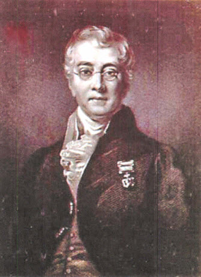
贝尔爵士（Sir Charles Bell，1774—1842），著有《表情的解剖学和心理学》（Anatomy and Physiology of Expression ）。达尔文在自传中写道：“1840年夏季，我读到了贝尔爵士论表情的名著。这就大大提高了我对这个主题的兴趣。”
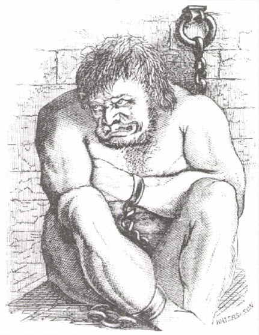
《表情的解剖学和心理学》一书中的插图。
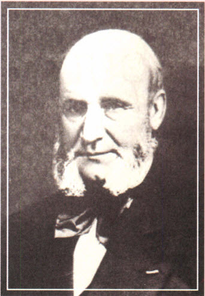
杜庆（Guillaume-Benjamin-Amand Duchenne，1806—1875），法国神经生物学家，著有《人相机制》一书，书中用电击法分析面部肌肉的动作，并且用很精美的照片来说明问题。达尔文在本书中大量引用杜庆的研究结果作为论据。
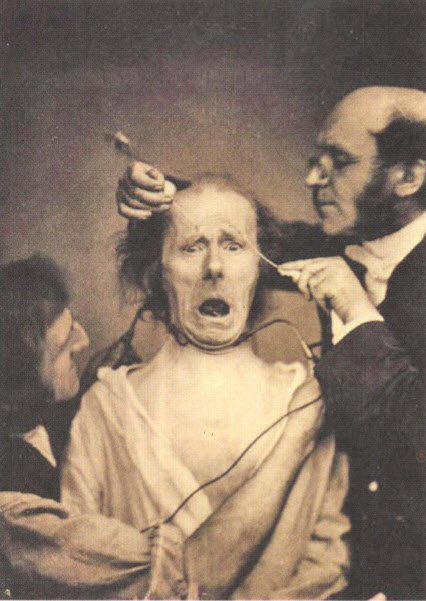
杜庆和他的助手正在把电流通到一个老年人的面部肌肉上。
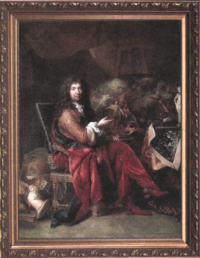
关于表情的研究，最先是起源于人相学方面的研究。达尔文认为这方面最著名的一部古书，是画家布朗（Le Brun，1619—1690）在1667年出版的《讲义》，达尔文在本书“绪论”中说该书“含有几个良好的意见”。
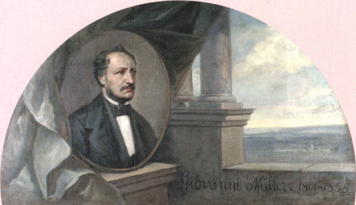
在达尔文之前，很多人认为面部表情问题是不能被说明的。例如，著名的生理学家米勒（Johannes Peter Müller，1801—1858）就这样说道，“面部的各种激情发生时候的完全不同的表情……我们完全不明白这种现象的原因”。又如贝尔爵士总是尽可能把人类和比较低等的动物之间的差别拉开得很远。
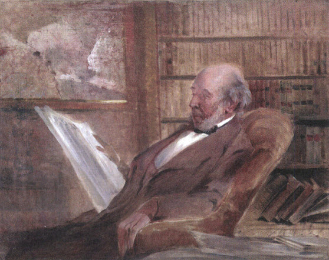
直到进化论的支持者斯宾塞（Herbert Spencer）在其著作《心理学原理》中，获得了一个可以说明表情的“一条普遍的法则”，这是一种发展理论。达尔文认为，这个法则对于理解人类表情具有重要意义。事实上，达尔文在本书“绪论”中已经明确提出：“在我们还把人类和所有其余的动物看做是彼此无关的创作物的时候，我想要尽可能去研究表情的原因的天然愿望，就难以实现”。
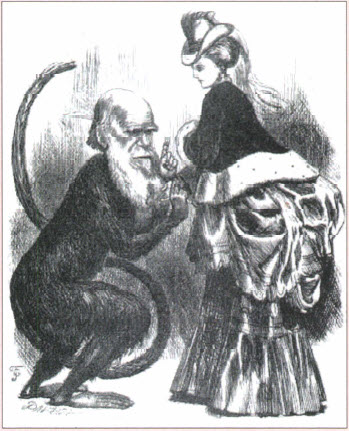
达尔文第一个大胆采取有机界的历史发展学说的唯物主义立场来研究表情这个问题。这幅1872年刊登在Fun 杂志上的讽刺漫画正是针对达尔文的新书《人类和动物的表情》，一个着装时尚的妇女对达尔文说：“Darwin，say what you like about man；but I wish you would leave my emotions alone。”
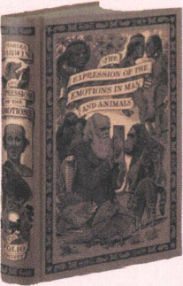
1872年达尔文的代表作之一《人类和动物的表情》出版。图为该书英文版封面。
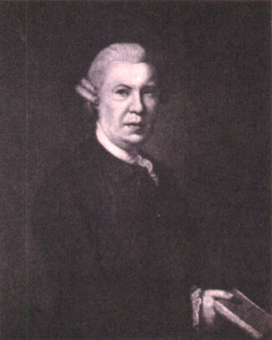
莫利一世（John Murray I，1745—1793）。莫利是著名的出版商，他成立的公司因为出版了许多著名人物的著作而名垂史册，例如简·奥斯丁、柯南·道尔爵士、莱伊尔、歌德、达尔文等。达尔文的《人类和动物的表情》也是由莫利出版。莫利曾预测本书“would poke a terrible hole in the profits”。果不其然，该书在出版后的第一天，就销售了5267本。
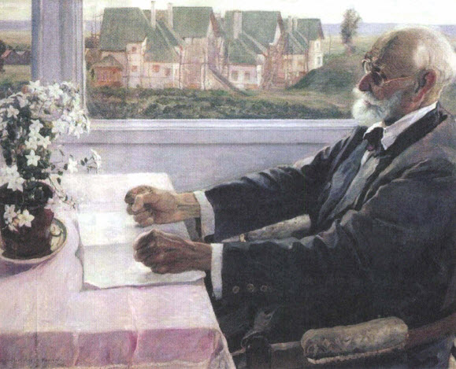
巴甫洛夫（Ivan Pavlov，1849—1936）的条件反射理论，将传统的生理学研究推向了心理学领域，并形成了以巴甫洛夫为代表的学派。达尔文对于那些伴随着不同情绪而出现的表情动作的本性方面的观点，正与巴甫洛夫的相吻合。当时的苏联科学家已有多人翻译了达尔文的《人类和动物的表情》，本中译本即根据格列尔斯坦的俄文译本翻译而来。《人类和动物的表情》是一部开创性的著作，从此，对人类情感和行为的研究便获得了不可缺少的进化论基础。
达尔文在《人类与动物的表情》“绪论”中说：“人类的某些表情的来源，例如由于极度恐怖的影响而头发竖直的情形，或者由于发狂的大怒的影响而露出牙齿的情形，除了承认人类曾经在很低等的类似动物的状况下生活过以外，那就难以使人得到理解了。如果我们承认说，不同的、但也是有亲缘关系的物种起源于共同的老祖宗，那么它们的某些表情的共同性就比较容易使人理解了。例如，人类和各种不同的猿在发笑时候所发生的同样的面部肌肉的动作，就是这样的。一个人如果根据于一切动物的身体构造和习性都是逐渐进化而来这个普遍的原理，那么就会用一种新的具有趣味的看法，去考察这整个关于表情的问题了”。
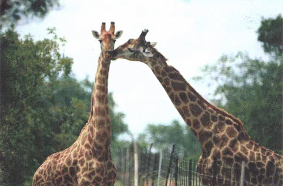
正在表示友好的长颈鹿
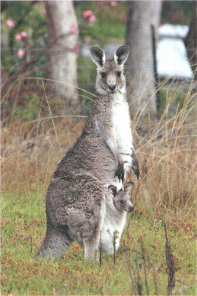
警惕的袋鼠母子
在动物世界，雌性动物奇迹般担负着照顾幼崽、保护周围安全的责任。一些相距甚远的物种，却表现出相同的母性。达尔文视“本能”和“母爱”为同义词，他通过母亲保护弱者的本能表现，来突出母性行为模式的社会利他主义精神和道德情操。
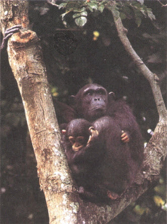
猴子的“母爱”
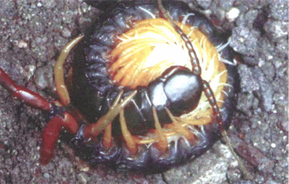
蜈蚣的“母爱”
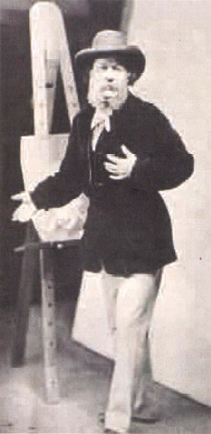
烈治朗德尔（Oscar Gustave Rejlander，1813—1875）是著名的摄影家，达尔文从他那里得到了很多有关小狗姿态的照片，比如本书图4。
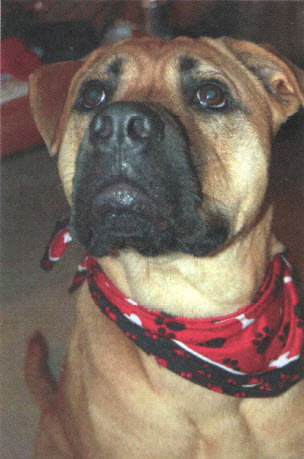
达尔文在本书中，对狗和猫的各种表情都做了细致的描写和比较。并以此展开，说明人类和比较低等的动物在表情和姿态方面的联系。图为一只受了委屈的小狗。
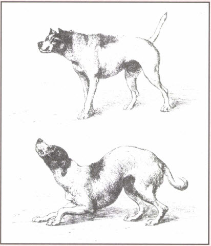
达尔文在本书中举例说明同一只狗的不同状态。图的上方：以完全攻击的姿态接近另一动物的一只狗。图的下方：表现的是一种亲善姿态。
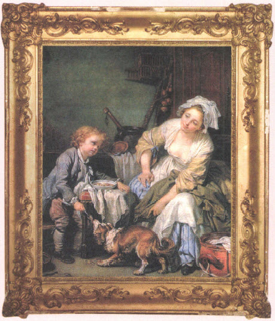
达尔文在本书中总结了六种方法来研究人类和动物的表情：①观察婴孩，因为婴孩能表现出很多“具有特殊力量”的情绪来；②研究精神病患者；③对用电流刺激面部肌肉产生的表情的判断；④分析绘画和雕刻作品；⑤比较那些与欧洲民族很少来往的人种；⑥察看几种普通动物的表情，特别是驯养的狗。图为格勒兹（Jean-Baptiste Greuze）于1765年创作的油画，画中的小狗正作出一副讨好主人的姿态。
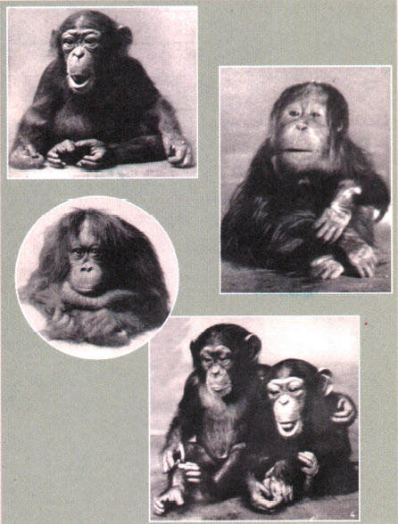
达尔文相信各种动物同样拥有感情和情绪，比如，他发现猴子也会欺骗，黑猩猩也会像失望的孩子一样闷闷不乐和撅嘴。他在伦敦动物园里一只猩猩身上看到了热情、怒火、郁闷以及绝望时的种种表现。所以达尔文声称：“很明显，像人类一样，低等动物也能感受痛苦、欢乐和不幸。”
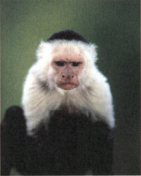
达尔文在本书第4章中提出，研究动物表情的方法，可以从“声音的发出、毛发的竖直、双耳的拉伸、头部的抬起”等方面进行分析。比如猿类在愤怒或恐怖的情形下，毛发会竖直起来。达尔文认为：“猿类的表情动作中的几种，从它们极其相似于人类的表情动作方面看来，是很有趣味的……这对于是否应当把所谓人种看做是独立的种或变种这个问题，有几分关系。”
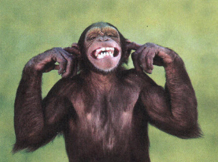
著名的动物生态学家珍妮·古道尔（Jane Goodall，1934—），曾深入丛林实地观察黑猩猩长达38年，她说：“黑猩猩的肢体语言的交流和人类非常相像。小别后重逢，它们会亲吻、拥抱，或者亲切地拍对方的后背。争斗时，它们也会采取吓唬、怒吼、拳击等手段……”
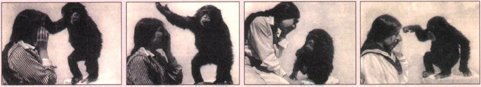
人和黑猩猩表现出来的悲伤、生气、高兴、焦虑等情绪。
达尔文在本书中根据表情特征把人类的情绪大致分为：痛苦、悲哀（忧虑）、快乐（爱情、崇拜）、不快（默想）、愤怒（憎恨）、厌恶（鄙视、轻蔑）、惊奇和害羞。越是思考自然界的苦难，达尔文就越发困惑，因为当时的神学理论把世间所有的苦难都归诸于上帝对于信徒的考验，但他却无论如何也想不通，一个真正仁慈全能的上帝，怎么可能会把秩序建立在一种无比沉重的痛苦之上。于是，在《自传》中，达尔文也试图确定在所有具有感觉能力的生命中，究竟是“悲惨更多，还是快乐更多”，“这一世界作为整体是善还是恶”。
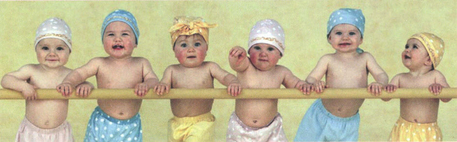
达尔文从他的第一个孩子降生开始，就记录婴儿的各种表情变化。这也是达尔文在本书中认为最有用的研究方法中的一条，因为正像贝尔爵士所指出的，婴孩表现出很多“具有特殊力量”的情绪来，可是在以后的年龄里，人类有几种表情就“丧失了在婴孩时代所涌现出来的那种纯粹而单纯的泉源”。达尔文思考了婴儿微笑的起源问题，他通过观察自己孩子的成长过程，总结出了从微笑到大笑的逐渐过程。图为一幅广告作品中不同孩子的各种表情。
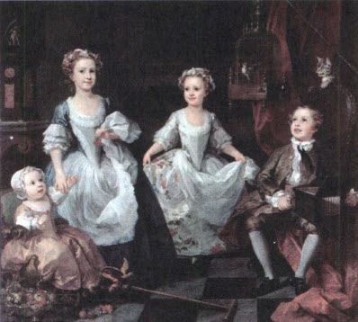
威廉·霍加斯（William Hogarth）于1742年创作的油画“格雷汉姆家的孩子们”。画家捕捉到了每个孩子活泼可爱的笑容，并且把它们描绘得各不相同。达尔文在深入思考了人类的情感之后得出结论：“这些愉悦，它们持久反复地出现，以至我毫不怀疑，总体说来，它们给予大多数有感觉生物的快乐要超过悲惨，尽管许多个体偶尔也会经历更多的折磨。”就此而言，达尔文依然是一个常识意义上的乐观主义者。
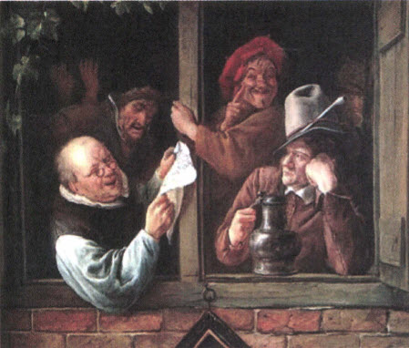
人类的生活中尽管难以摆脱暴力的阴影，但人类的天性中同时还不乏对于和平的追求和向往。正如人类学家的观察，一个正在微笑的人是不会同时拿起武器杀生的。图为斯泰恩（Jan Steen 1626—1679）的油画，那个时代，很多画家都画过大方的微笑，都热情奔放、豁达开朗。
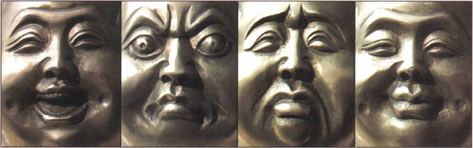
当代心理学家认为，人类的情绪分为基本情绪和次级情绪。基本情绪有五种：快乐、悲伤、愤怒、恐惧和厌恶，次级情绪是上述五种基本情绪的细微变体。值得注意的是，上述五种基本情绪中，除快乐之外，其余四种都是负面情绪。这一点意味深长。图为我国传统意义上的“喜怒哀乐”四种情绪。（王直华摄）
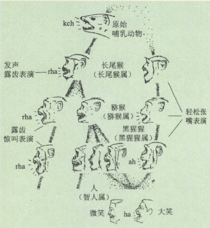
人类的微笑仍有其进化上的渊源。威尔逊（Edward O. Wilson，1929—）在《社会生物学》一书中提到一个假说，认为微笑在进化上源于动物的“露齿表演”，而“露齿表演”在系统发育上是最原始的社会信号之一。当个体受到恶意刺激并具有逃跑倾向时，它们就会采用这一表演形式。逃跑受到阻挠时，还会强化这一表演。
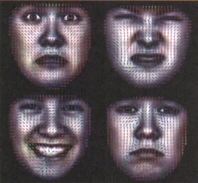
达尔文提出了面部表情是一种生存优势的理论，比如婴儿的微笑是为了取悦母亲，是婴儿的一种适应性状。达尔文还用吃惊时睁大双眼作为例子。他推测，这些带有情绪的面孔或许具有一定的生物学功能，例如，在敌人面前表现出一个更加强势的外表。100多年之后的今天，科学家利用新的技术研究证明，一张写满情绪的面孔井不是仅仅用来看的，例如恐怖的表情增加了外围的视觉、加速了眼球的运动以及推进了空气的流动，从而使得一个人能够更加快速地感知危险并对其作出响应。图为加拿大多伦多大学的认知神经科学家Adam Anderson研究小组用计算机绘制的恐惧、厌恶、悲伤和兴奋各表情中的肌肉运动。
达尔文被誉为是第一位认真研究情绪的科学家，他试图解决表情的起源问题，他认为人和动物表情流露的目的是为了在群居动物中加强社交纽带，他多次强调，不同物种之间的区别只是程度上而不是本质上的区别。经过上百年的发展，今天的很多研究结果也支持达尔文的观点。当今的社会生物学、神经生物学、心理学、人类学等领域都将《人类和动物的表情》一书视为最基本的参考文献，人们用一个多世纪才理解并开始认真开采达尔文在这部书中测绘出的丰富脉矿。